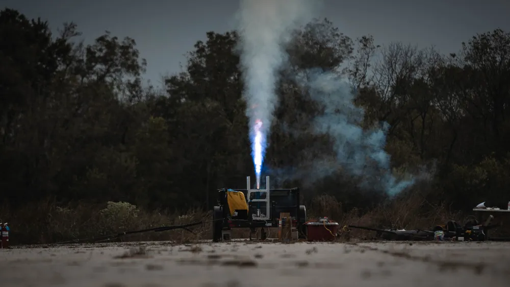
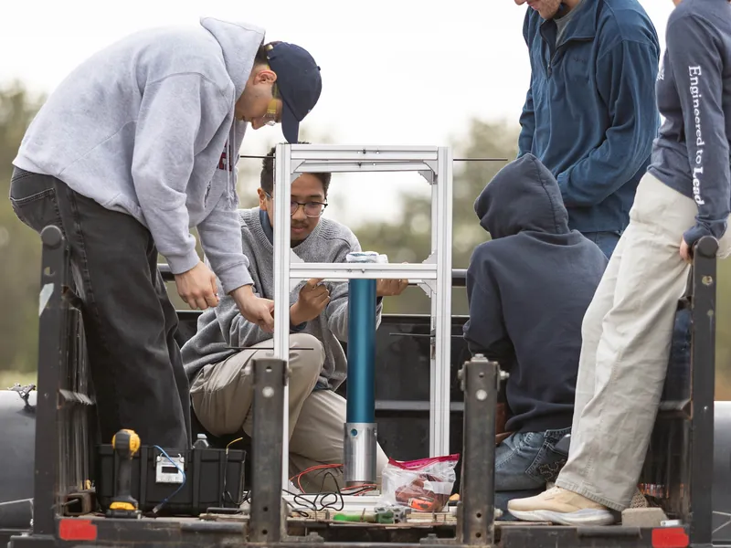
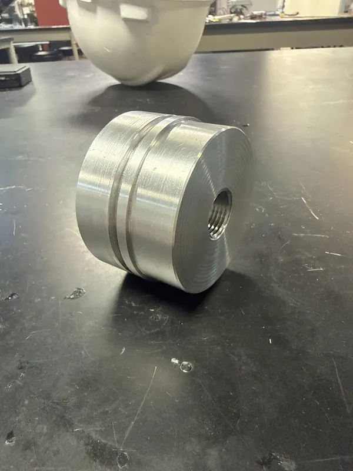
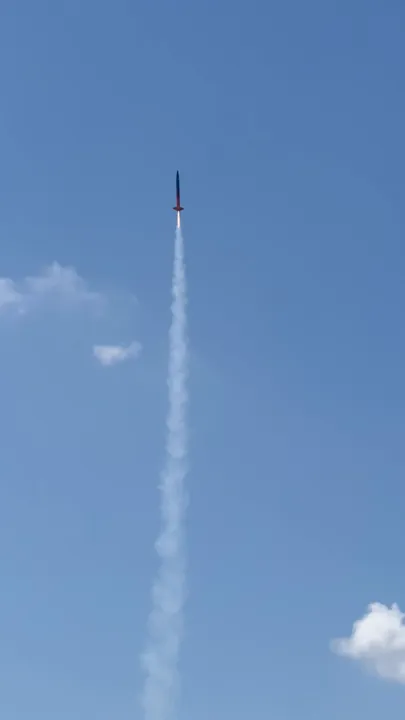
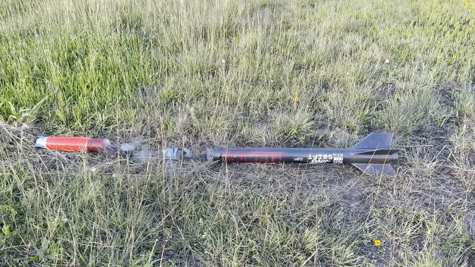
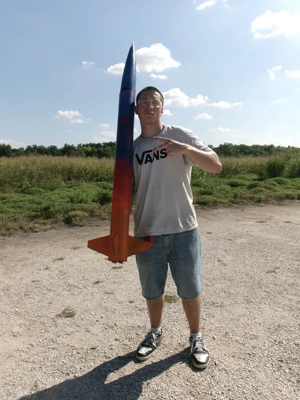

Mechanical engineering · Rice University · Class of 2029
I design, machine and test rocket hardware.
I’m David Casper, a sophomore at Rice University and Structures Sub-Team Lead in the Aerodynamics Division of Rice Eclipse Rocketry. This fall my sub-team built a head end ignition system for a Loki L1482 motor and proof tested it at 1,300 psi. Then I directed the division’s first hot fire to validate it.
L1482 hot fire · Hearne, TX · Nov 14, 2026 · Photo: Owen Button
- 1,300psi
- Hydrostatic proof test, held leak-free
- 1st
- Hot fire in the Aerodynamics Division, directed as test lead
- 2,739ft
- Level 2 certification flight, within 9% of simulation
- 3.91GPA
- B.S. Mechanical Engineering, Rice University
Projects
Six pieces of work from Rice Eclipse and my own certification build.

Head end ignition for a Loki L1482
Built an igniter feedthrough in a motor’s forward closure from a Loki-proven design, then directed the hot fire that validated it.

Aft plug and 1,300 psi hydrostatic test
Machined an aluminum plug that stands in for the nozzle so the motor case could be proof tested with water at 1.5 times its peak chamber pressure.

Load-bearing recovery coupler
Designing a custom-threaded coupler that joins the motor’s forward closure to the body tube and anchors the recovery system.

Level 2 certification rocket
Designed and built a fiberglass J-class rocket with a 3D-printed avionics bay and redundant dual deployment. It flew to 2,739 ft.

Prometheus liquid engine
Chamber material studies and MATLAB injector sizing for a nitrous oxide and ethanol engine, plus plumbing and leak checks on hot fire day.

Two-stage flight and recovery testing
Launch operations for Prestige, Eclipse’s first successful two-stage rocket, and black powder ground tests of the recovery system.
About
I’m a sophomore at Rice University studying mechanical engineering, with an aerospace specialization and a minor in computational and applied mathematics. I like the full loop of hardware: working out what a part has to do, drawing it, making it, and then testing it hard enough to trust it.
On Rice Eclipse I lead the structures sub-team in the Aerodynamics Division. Outside the team I teach MIG and stick welding in the mechanical engineering department’s weld lab, and I’m an undergraduate researcher on the T*AFSM team, where I’m training in computational fluid dynamics and fluid-structure interaction.
I’m looking for a 2027 internship or co-op in aerospace or mechanical engineering.

Experience
Jul 2026 – Present
Structures Sub-Team Lead, Aerodynamics Division
Rice Eclipse Rocketry Team
- Built head end ignition (HEI) for a Loki L1482 closure from a Loki-proven design, epoxy-potting the igniter wires using jigs
- Machined an aluminum aft plug with a +0.002/−0.000 in toleranced O-ring groove; the hydrostatic test held 1,300 psi leak-free
- Directed the division’s first hot fire; thermocouples and thermal video showed no hot gas leakage, validating the HEI
- Designing a custom-threaded, load-bearing coupler that joins the closure to the body tube and anchors recovery
- Responsible for structural component design, including rail guides, av-bay supports and the interstage
Aug 2025 – Jul 2026
Member, Aerodynamics and Propulsion Divisions
Rice Eclipse Rocketry Team
- Assembled plumbing and performed leak checks during test day setup for the successful Prometheus hot fire
- Authored two reports on chamber materials for the N2O and ethanol engine Prometheus, guiding its stainless steel selection
- Wrote MATLAB scripts sizing injector hole count and diameter from pressure drop with the Dyer two-phase N2O model
- Executed pre-flight assembly and launch operations for Prestige, Eclipse’s first successful two-stage rocket
- Validated the recovery system through more than five black powder ground separation tests
Sep 2026 – Present
Undergraduate Researcher, T*AFSM
Team for Advanced Flow Simulation and Modeling, Rice University · Advisor: Dr. Tayfun E. Tezduyar
- Selected as a sophomore to support CFD and FSI research in aerospace aerodynamics and cardiovascular flow
- Bishnoi Sustaining Excellence in Research (SER) Scholar
- Studying the lab’s published methods while training to generate 3D fluid meshes and automate post-processing
Aug 2026 – Present
Undergraduate Teaching Fellow, Welding Lab
Rice University Department of Mechanical Engineering
- Selected after demonstrating advanced MIG and stick welding proficiency
- Teach MIG and stick welding to four-student rotations in six 3-hour sessions
- Run the weld shop independently; four students fully trained to date
Skills
- Design
- SOLIDWORKS, SOLIDWORKS Simulation, GD&T, OpenRocket, Onshape
- Programming
- MATLAB, Python, C, Linux terminal and WSL
- Fabrication
- Lathe machining, milling, MIG and stick welding, soldering, 3D printing, composite layups
- Testing
- Hot fire testing, hydrostatic testing, propellant feed system leak checks, black powder ground testing
- Languages
- Spanish (intermediate)
Education
- 2025 – 2029
- Rice University B.S. Mechanical Engineering with an aerospace specialization. Minor in Computational and Applied Mathematics. GPA 3.91. Completed: Thermodynamics, Partial Differential Equations, Matrix Analysis. In progress: Fluid Mechanics and Lab, Computational Fluid Mechanics. Spring 2027: Heat Transfer, Stress Analysis and Lab, Rigid Body Dynamics, Fluid-Structure Interaction (graduate).
- 2024 – 2025
- Utah Tech University 28 credit hours of engineering and math coursework while in high school. GPA 3.98.
- Certification
- High-Power Rocketry Level 2 Tripoli Rocketry Association, September 2026.
- Also
- Rice Spring Externships NASA Johnson Space Center, Enterprise Products Partners and Emerson Electric, March 2026. Rice in Argentina study abroad, May to June 2026. ASME member since January 2026.
Get in touch
I’m looking for a 2027 internship or co-op in aerospace or mechanical engineering. Email is the best way to reach me.